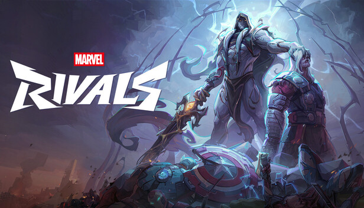
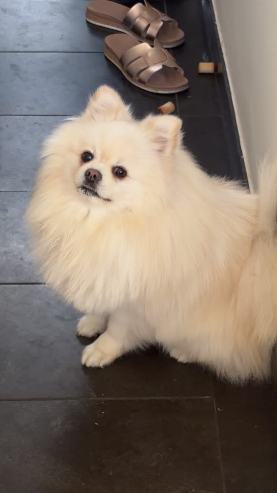

Afkomstig vanuit Sterrebeek
Ik leef zolang dat ik het me kan herinneren in Sterrebeek, Zaventem
Mijn hobbies
Er zijn meerdere dingen die ik graag doe in mijn vrije tijd
-
Basketbal
Ik speel basketbal voor de Zaventem Jets
-
Muziek
Ik ben Saxofonist voor de Koninklijke Harmonie Sint-Jozef Moorsel
-
Gamen
-
Story games
Ik speel de laatste tijd heel graag story games...
-
Online games
maar er blijven tijden wanneer ik terug ga naar meer competitieve games

-
Mijn muzieksmaak
-
Tijdens het werken
Terwijl ik dit aan het schrijven ben luister ik naar...
-
Algemene muzieksmaak
mijn algemene muzieksmaak is niet makkelijk om te beschrijven,
dus ik ga nog een paar nummers opnoemen
Programmeren
Ik heb vorig jaar de richting Applicatie & Databeheer gevolgd in het Miniemeninstituut.
Ik had het jaar toen niet gehaald (deels door enkele persoonlijke problemen heel het eerste semester gemist heb)...,
maar ik werd toen doorverwezen naar de UCLL door mijn leerkrachten omdat ze potentiëel zagen in mij.
Huisdieren
Ik heb een hond, 2 katten (en een 3-jarig neefje als je dat wilt meetellen)
Of we het nu willen toegeven of niet, iedereen heeft een favoriete huisdier

Dit is mijn pommeriaantje, Leo